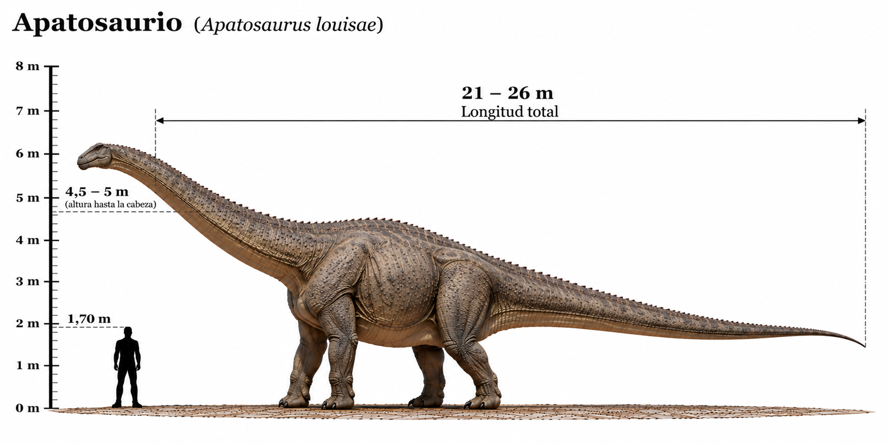

Apatosaurus

El Apatosaurus fue un enorme dinosaurio saurópodo herbívoro que habitó América del Norte durante el Jurásico tardío, hace aproximadamente entre 152 y 151 millones de años. Se caracterizaba por su cuello largo y robusto, su cabeza relativamente pequeña, sus cuatro poderosas patas y una cola muy larga que se estrechaba hacia el extremo. A diferencia de otros saurópodos de cuello más esbelto, el Apatosaurus poseía un cuerpo especialmente pesado y un cuello formado por vértebras muy robustas. Podía alcanzar más de 20 metros de longitud y varias decenas de toneladas de peso. Se alimentaba de plantas y probablemente utilizaba su largo cuello para acceder a vegetación situada a diferentes alturas.
- Grupo: Saurópodo.
- Familia: Diplodocidae (diplodócidos).
- Período: Jurásico tardío (hace aproximadamente 152–151 millones de años).
- Alimentación: Herbívoro.
- Longitud: Aproximadamente 21–23 metros.
- Altura: Aproximadamente 4–5 metros hasta la cadera.
- Localización: América del Norte.
